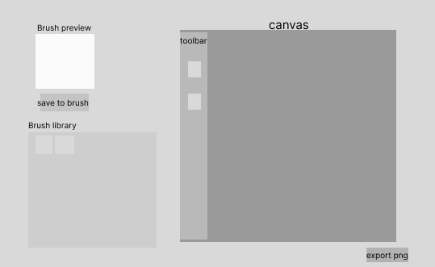
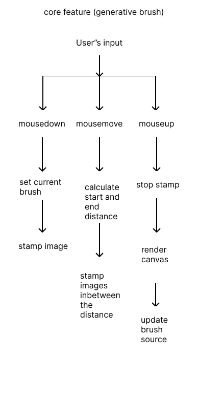
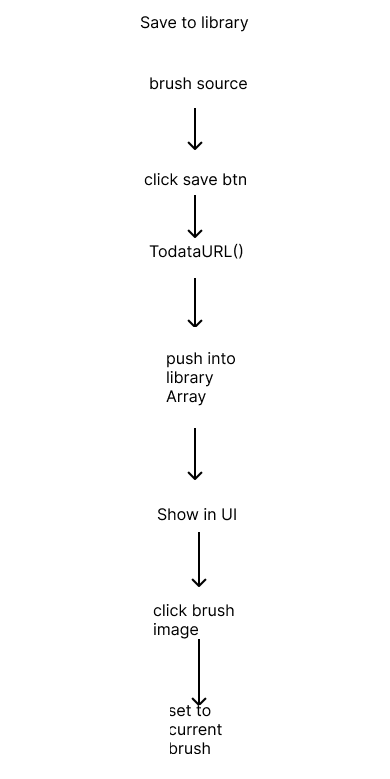

Yulia's studio Work Index
s3847150
Introduction Exercise
Hello, my name is Yulia(she/her). I come from Chengdu, China.
I was in Animation Design. I'm interested in web design and interactive media, so I transferred to digital media.
I don't really have favorite emoji, but I love cat memes.
My familiar expressive software are adobe photoshop and procreate, basically some painting tools.
I did Interactive Media last semester, which provides me some coding experience.
link to my githubIn-class Experiments
Studio Project Speculation
inspiration and function
This project reframes digital brush creation from a technical process into a visualized, playful, and generative process.
The inspiration for this project comes from a screenshot of a post on X, where someone discovered that the brush they were using for drawing was made from an image of a painter’s face.
The main function of the website is that users draw on the canvas, and the patterns they create can be turned into brush shapes. These newly generated brushes can be saved, and users can continue drawing with them to generate new brush patterns. After each stroke, the brush used is replaced by the image created in the previous stroke. The website also allows users to save brushes at any time, so they can reuse previously saved patterns, continue drawing with them, and further generate new brushes from their drawings.
Purpose
- Allow users to create brushes through interaction with the canvas on the website.
- Exploration – allow users to explore visual patterns during the brush-making process.
- The idea of the brush is inspired by bomomo, which provides a variety of brushes composed of simple graphic elements. By clicking on a brush, it generates lines using that brush. During my experience with the website, I explored different brush effects, and the process felt enjoyable. The interaction is very simple and light. However, while creating drawings, I also wanted to have some control over the brush, but it mainly generates patterns randomly, which made me feel a bit limited. Although the generated patterns are visually appealing, the sense of control is relatively weak. Therefore, I want to create a website where users can both experience the process of brushes generating and have a certain level of control over the brush. Users should be able to explore and create within this system.
Worth
- Approachable — lowering the barrier to creative tools
- Improve usability and efficiency in brush creation
- Empowering and meaningful — allowing users to create their own tools and artwork
- Learnability — enabling intuitive learning through visual interaction
- Making the process enjoyable, engaging, and motivating
WigglyPaint provides a simple tool for creating micro-animations. I really like its brush texture, which maintains a consistent style while still feeling unique. What impressed me is that it uses a single simple rule — making lines move — yet allows users to create stylized works. It makes effects that would normally require professional software much easier to achieve. Similarly, my website aims to simplify brush creation through a clear interface and interaction, making it easier for users to create and experiment with their own brushes.
Traditional painting software provides static brushes. Although users can create brushes from images, the process is often complicated and not easy to discover. On social platforms, only a small number of users create brushes, while most download or purchase them. This project aims to provide a more accessible way for users to create their own brushes and use them in their artwork. In traditional painting, brushstrokes are an important form of expression, and this tool aims to expand that expressive potential.
Useless Painter, along with tools like WigglyPaint and silk, shows that users feel motivated when they can produce visually interesting results. These tools provide both randomness and a certain level of control, which helps stimulate creativity. In this project, control is reflected in the ability to save brushes at any time. The tool should also support producing usable outputs, such as exporting PNG images that can be reused in other software.
Users should be able to learn the system in an intuitive and visual way. The interaction should remain similar to existing drawing tools,but only keep the core function, allowing users to quickly get started. A dynamic preview window shows the current brush shape, providing immediate feedback. Even without prior experience, users should understand the system after a few attempts. Icons are used where possible to reduce cognitive load, as visual representation is a highly intuitive form of information design.
The tool provides immediate feedback (and potentially subtle sound effects) to create positive reinforcement during the creative process. This encourages users to continue exploring. While I experimented with stronger visual feedback in Experiment 2, I found it may be slightly excessive for a drawing-focused interface.
Framing
- Playful experimentation
I want the tool to have a lively and stylized interface, similar to WigglyPaint and Useless Painter, so that users feel relaxed and motivated while creating. The goal is to encourage users to play with the system rather than feeling pressure to produce a “masterpiece”.
- Exploratory interaction
- Generative creation
I want o explore KonvaJS’s canvas and shape functionalities, and possibly use screenshots to capture the current shapes. Mapping the drawing input as another input for next action. I experiment a mapping mechanism between numbers and colors. It probably can be used to transform coordinate and stroke color.
The tool should support interactive exploration. In Useless Painter, I found that the way information is presented can be slightly confusing, and it took some time to figure out how to control the brush. In this project, users can simply draw freely on the canvas to generate patterns. I will provide a limited set of controls (such as switching between brush and eraser) along with minimal text guidance, allowing users to discover different effects and functions through exploration.
This approach is inspired by silk and the useless web. Silk uses generative patterns to support creation, while The Useless Web highlights the appeal of randomness. In this project, the system responds to user interaction by producing variable visual outcomes, introducing unexpected variations that encourage experimentation. Brush creation itself becomes a form of creative exploration, rather than a technical process. This generative approach also helps users avoid getting lost in complex parameter settings found in traditional brush-making tools.
Assignment2
Conceptual Response
mapping
User input does not only generate visual output, but also reshapes the tool being used. The brush evolves through each interaction, meaning that every stroke affects future outcomes. This transforms the brush from a static tool into a dynamic one, where each output feeds back into the next input.
I chose this approach to encourage users to participate in the making of the tool, rather than simply using a finished instrument. Through interaction and exploration, the tool itself becomes part of the overall experience.
By doing so, the design encourages users to engage creatively not only with the image-making process, but also with the design of the tool itself. It helps them become more aware of the small and initial elements that shape their creation, and gives them opportunities to express their ideas through each subtle detail of the evolving system.
Information Design
The interface provides minimal guidance, encouraging users to explore and discover the underlying logic through interaction.
The target users are hobbyists who enjoy digital drawing. Rather than offering a highly complex or professional brush-making system, the tool adopts a simplified approach that can still generate useful outputs, such as exportable PNG images.
The interface is designed to be playful and relies more on icons than text, supporting intuitive understanding over technical instruction. As drawing itself is a creative and playful interaction, the interface aims to reflect and extend this emotional quality to the user.
As discussed in my earlier work, the project shifts brush-making away from tedious parameter adjustments and highly technical interfaces. By lowering the barrier to entry, it reframes the process as an intuitive, simple, and engaging experience suitable for everyday creative practice.
This approach contrasts with conventional design tools that rely on precise parameter control, instead promoting exploration, accessibility, and creative engagement.
Technical Approach
WireFrame

Flowchart


reference websites
Draw Manually sketching with brush image toDataURL (haven’t used. Plan to use in undo/redo and save to library function) drawImage() method (to draw with resized canvas content.)The core functionality of this project is to replace continuous stroke rendering with image-based stamping, where strokes are formed by repeatedly placing brush images instead of connected points. Additionally, the current canvas content is used as the brush source.
The implementation is informed by approaches such as “Sketching with Brush Images”. The overall method uses trigonometry to calculate the distance between the start point and end point, and then determines the x and y positions for each stamp along the path. A loop (e.g. z++ or z += value) is used to control the spacing between stamps, resulting in a continuous drawing effect.
To achieve the generative functionality, drawImage() is used to capture and scale down the current canvas content onto a separate, smaller brush canvas (with plans to allow adjustable brush canvas size in future iterations). This smaller canvas is then reused as the brush source to generate evolving visual patterns.
To support the eraser as a creative tool, destination-out is used for erasing, while source-over is used for normal drawing.
For the preview window, a separate canvas is created to render the current brush source. The preview is updated during the mouseup stage to reflect the latest brush state.
For the brush library, the proposed approach is to use toDataURL() to store brush images, push them into an array, and render them as thumbnails using small canvases. This part has not yet been implemented and remains to be tested.
I also plan to implement undo/redo functionality using arrays, with a logic similar to the brush library system.
While experimenting with new ideas—specifically introducing randomness into the brush—I unintentionally discovered a texture similar to a spray tool. I plan to develop this into a dedicated tool within the toolbar.
For the UI, I intend to design custom icons and adopt a hand-drawn visual style. At current stage, different functional areas are distinguished using color blocks.
Project Timeline
Week1 to 3: concept and speculation.
Week 4: wireframe and Prototype(html+css).
Week5-1 : understand and implement reference: Konvajs draw manually.
Week 5-2: understand and implement reference: sketching with image.
Week 6-1: core feature implementation (generative brush).
Week6-2: prototype for A2.
Week 7: Peer User testing and organize documentation.【At this stage】
Week 8-1: brush library implementation.
Week 8-2: start building toolbar features.
Week 9: toolbar features: spray tool, sliders for changing size and opacity, color palette(if needed).
Week 10: tool bar features refine, drawing tool button, stylize UI.
Week 11: stylized UI refinement, A3
Week 12 to 13: reflection and manage documentation
A2 phase
The project is generally progressing according to plan. However, I spent more time than expected trying to understand Konva and sketching with images—especially the latter—which required me to use the mid-break period to catch up.
After establishing the core functionality, I decided to introduce a preview window at the prototype stage to make the system logic clearer for users. This was not part of the original plan, but I chose to implement it earlier than scheduled to improve usability.
I also spent some time on exploring additional features such as using speed to control spacing. However, it doesn't work well. There's some conflict between the click-stamp system and speed control system. I gave up this idea